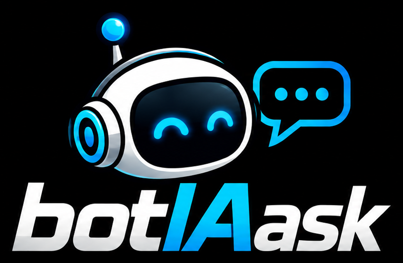
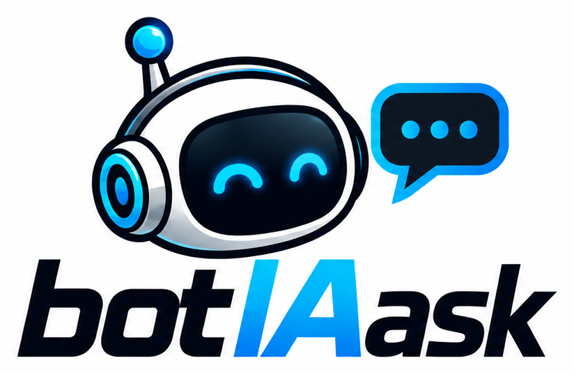

The IRC bot that answers back.
botIAask brings an OpenAI-compatible AI, RSS, GitHub activity, pastes, market data and a full web dashboard to your IRC channels. It ships as one static binary or a container.
Everything a channel needs, in one binary.
No plugins to wire up. Turn features on in config.yaml or from the dashboard and reload live.
AI answers with !ask
Any OpenAI-compatible endpoint: LM Studio by default, terse plain-text replies tuned for IRC, with per-user rate limiting.
Multi-network IRC
Connect to several networks at once. Per-network channels, services auth, admins, TLS options, and live join/part.
RSS & news
Multiple feeds, per-source dedup, URL shortening (is.gd, tinyurl, v.gd…), optional announcements to any network:#channel.
GitHub tracker
Announce pushes, PRs, releases, issues, and branch/tag events. Private repos supported with encrypted-at-rest tokens. Manage with !gh.
Pastes & uploads
!paste and !upload issue time-limited links, moderated by an admin ticket workflow, with expiry.
Markets, weather, movies
Crypto, EUR and ARS rates, Open-Meteo weather, flights, OMDb lookups, math, reminders, bookmarks, !tell/!seen.
Web dashboard
Live logs over SSE, admin panels, feature toggles, bookmarks, financial views, and a themeable UI protected by sessions + CSRF.
Channel Stats
Busy-hours chart, weekday×hour heatmap, top talkers, mode/topic activity, from compact daily rollups. Also !chanstats in IRC.
Solid by default
Parameterised SQL, rate-limited logins, SQLite WAL, scheduled hot backups, live config !rehash (SIGHUP) with no restart.
Up and running in a minute.
Pick your flavour. All of them read the same config.yaml; you only need an IRC server and an AI endpoint (e.g. LM Studio at localhost:1234/v1).
# clone, configure, run
git clone https://github.com/gcanosa/botIAask.git && cd botIAask
cp config/config.yaml.template config/config.yaml # edit IRC server, nick, channels, AI URL
go run main.go # foreground, console output
go run main.go -dashboard # daemon + web UI on :3366mkdir -p state/config state/data
cp config/config.yaml.template state/config/config.yaml # edit it
docker compose up -d --build
# dashboard → http://localhost:3366mkdir -p state/config state/data
cp config/config.yaml.template state/config/config.yaml
./scripts/podman-build.sh # builds botiaask:local
podman compose up -dNeed more? See installation, containers and the config template.
Debug in the foreground, or run as a daemon.
🐞 Foreground / debug
The default. Runs in your terminal with verbose console output: best for first setup and troubleshooting.
go run main.go
./botIAask -debug🛰️ Daemon + dashboard
Detaches, writes bot.pid, and can start the web UI on port 3366. Control it with -mode.
./botIAask -dashboard
./botIAask -mode restart
./botIAask -rehash